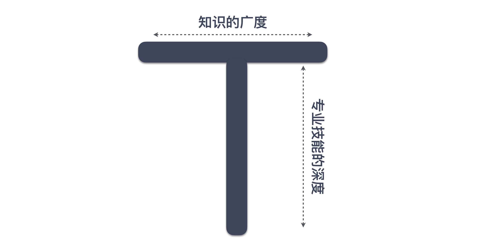

40 | 我们应该如何保持竞争力？
在前面两讲，我结合着两个程序员要直接面对的场景，讨论了如何综合运用前面学习到的知识，这一讲的内容可能不涉及到实际的应用场景，但与每个人的发展息息相关。我想谈谈如何走好程序员这条路。
焦虑的程序员
让我们再次用思考框架分析一下问题。首先，现状是什么？关于这个问题，我并不打算讨论个体，因为每个人的情况千差万别，我准备从整体入手。
IT 行业是一个快速发展变化的行业，一方面，我们不断地看到有人快速取得成功，另一方面，我们也听到了许多充满焦虑的声音。获得大的成功总是一个小概率事件，大多数人面对的还是日常的柴米油盐。
我们的焦虑来自于对未来的不确定性，而这种不确定性是一个特定时代加上特定行业的产物。
如果把时间倒回到上个世纪80年代之前，虽然当时的生活条件一般，但很少有人会为未来的发展焦虑，因为那时候，人们可以清晰地看到自己未来的人生，尽管那种人生可能是平淡的。
但今天的我们处在一个人类历史上少有的快速发展的时代，我们看不清以后的人生，大脑却还停留在上一代人的思维习惯上。
IT 行业在国内的大发展也就最近20多年的事，行业里很少有走过完整职业生涯的程序员。也正是因为如此，我们经常会产生了各种焦虑：
- 我刚刚入行时，有人问，程序员能做到30岁吗？
- 我快30岁时，有人问，35岁还能做程序员吗？
- 我35岁时，讨论变成了40岁的程序员该怎么办。
估计等国内有越来越多的程序员走完了整个职业生涯，就会有人关心，程序员退休之后的生活应该是什么样子了。
从长期来看，只要生活中还有需要用自动化解决的问题，程序员这个群体还是很有前景的。但随着时间的推移，程序员这个职业的溢价也会越来越低，单纯凭借身处这个行业就获得好发展的可能性也越来越低，想让自己的职业生涯走得更顺畅，还需要找到更好的目标，不断努力。
成为 T 型人
我们再来回答下一个问题：目标是什么。也许这时候，每个人脑子里想到的职业发展路线都不一样，但我准备用一个统一的目标回答你：成为 T 型人。
什么叫 T 型人？简言之，一专多能。

有了“一专”，“多能”才是有意义的，否则，就是低水平重复，而这正是很多人职业生涯不见起色的真正原因。
这里的“专”不是熟练，而是深入。你可能是个有着10年丰富经验的程序员，但实际上只不过是重复了10年解决同样难度的问题而已，这根本就不算深入，也就没有做到真正意义上的“一专”。
你会发现很多优秀的人，在很多方面都会很优秀，这是“一专”带来的触类旁通。
当你有了“一专”，拓展“多能”，就会拥有更宽广的职业道路。比如，我拥有了深厚的技术功底，通晓怎么做软件：
- 如果还能够带着其他人一起做好，就成了技术领导者。
- 如果能够分享技术的理解，就有机会成为培训师。
- 如果能够在实战中帮助别人解决问题，就可以成为咨询师。
反过来，当你有了“多能”，也可以拓宽你的视野，帮你认清自己的“一专”怎样更好地发挥价值，而不是狭隘地认为自己有了技术，就已经天下尽在掌握了。视野窄，缺乏大局观，也成为了许多程序员再进一步的阻碍。事实上，这个专栏里的很多内容都是帮你打开“多能”的视角。
也许你会说，我在公司已经独当一面了，应该算有“一专”了吧？但我想说的是，可能还不够。只做一个公司的专家，受一个公司的波动影响太大，而成为行业的专家，才会降低自己职业生涯的风险。
有时，我在面试时会问候选人这样一个问题：“如果让你在一次技术大会上做分享，你会讲什么呢？”我真正的问题是，以行业标准衡量，你觉得你在哪个方面是专家呢？
大多数人从来没有思考过这个问题，他们只是日常在完成自己的工作，即便在某一方面已经做得很不错了，但依然算不上专家，因为他们缺乏深度思考。
比如，你非常熟悉 Kafka，知道它的各种参数，也读过它的实现原理。但如果我问你，Kafka 为什么要把自己定位成一个分布式流平台，它要想成为一个流平台，还要在哪方面做得更好？你的答案是什么呢？
这其中的差别就是，前面所谓的熟悉，只是熟悉别人的思考结果，而后面则是一个没有现成答案的东西。学习微积分是有难度，但同发明微积分相比，难度根本不在一个层次上。当然，我不是说你要熟悉所有工具的发展过程，而是自己要在一个特定的方面拥有深度的思考。
也许你会说，这个要求实在是太高了吧！没错，这确实是一个很高的要求。但“取法于上，仅得为中；取法于中，故为其下。”
其实，很多人的焦虑就源自目标太低，找不到前进的动力。给自己定下一个可以长期努力的目标，走在职业的道路上才不致于很快丧失动力。
在学习区成长
现在我们来回答第三个问题，怎么达到目标。既然要朝着行业中的专家方向努力，那你就得知道行业中的专家是什么样。我的一个建议是，向行业中的大师学习。
你或许会说，我倒是想向大师学习，但哪有机会啊！好在 IT 行业中的许多人都是愿意分享的，我们可以读到很多大师级程序员分享的内容。
我在入行的时候，有幸读了很多经典之作，比如，出身贝尔实验室的很多大师级程序员的作品，诸如《C 程序设计语言》《程序设计实践》、《Unix 编程环境》等，还有一些像 Eric Raymond 这样沉浸编程几十年的人写出的作品，诸如《Unix 编程艺术》，以及前面提及的 Kent Beck、Martin Fowler 和 Robert Martin 等这些人的作品。
读这些书的一个好处在于，你的视野会打开，不会把目标放在“用别人已经打造好的工具做一个特定的需求”，虽然这可能是你的必经之路，但那只是沿途的风景，而不是目标。
接下来，我们要踏上征程，怎么才能让自己的水平不断提高呢？我的答案是，找一个好问题去解决，解决了一个好的问题能够让你的水平快速得到提升。什么是好问题？就是比你当前能力略高一点的问题，比如：
- 如果你还什么都不会，那有一份编程的工作就好。
- 如果你已经能够写好普通的代码，就应该尝试去编写程序库。
- 如果实现一个具体功能都没问题了，那就去做设计，让程序有更好的组织。
- 如果你已经能完成一个普通的系统设计，那就应该去设计业务量更大的系统。
为什么要选择比自己水平高一点的问题？这与我们学习成长的方式有关。Noel Tichy 提出了一个“学习区”模型，如下图所示：
- 最内层是舒适区（Comfort Zone），置身其中会让人感觉良好，但也会因为没有挑战，成长甚微，你可以把它理解成做你最熟悉的事情。
- 最外层是恐慌区（Panic Zone），这是压力极大的地方，完全超出了你的能力范围，你在其中只会感到无比的焦虑。
- 中间的是学习区（Learning Zone），事情有难度，又刚好是你努力一下可以完成的，这才是成长最快的区域。
根据这个模型，只有一直身处学习区才能让人得到足够的成长，所以，我们应该既选择比自己能力高一点的问题去解决，不要总做自己习惯的事，没有挑战，也不要好大喜功，一下子把自己的热情全部打散。
在学习区成长，就不要满足于当前已经取得的成绩，那已经成为你的舒适区。因为我们有远大的目标在前面指引，完成日常的工作只不过是个人成长路上的台阶。
也许你会说，我的工作不能给我个人成长所需的机会，怎么办呢？实际上，别人只会关心你是否完成工作，成长是自己的事情，很多机会都要靠自己争取，前面提到的那些具体做法完全是你可以在工作范围内，自己努力的事情。
如果你当前的工作已经不能给你提供足够好的问题，那就去寻找一份更有挑战性的工作。在 IT 行业，跳槽似乎是一件很常见的事，但很多人跳槽的时候，并不是以提升自己为目标的。造成的结果是，不断地做同一个层面的工作，自然也就很难提升自己的水平。
为什么程序员都愿意到大厂工作？因为那里有高水平的人和好的问题。但如果只是到大厂去做低水平的事，那就是浪费时间了。所以，即便你真的想到大厂工作，与谁一起工作，做什么事，远比进入大厂本身要重要得多。
如果你真的能够不断向前进步，迟早会遇到前面已经没有铺就好的道路，这时候，就轮到你创造一个工具给别人去使用了。比如，2012年，我在项目中受困于集成问题，却找不到一个我想要的、能在单元测试框架里用的模拟服务器，于是，我写了 Moco。
最后，我还想鼓励你分享所得。我在《28 | 结构化：写文档也是一种学习方式》中和你说过，输出是一种将知识连接起来的方式，它会让人摆脱固步自封，也会帮你去创造自己的行业影响力，机会会随着你在行业中的影响力逐渐增多，有了行业影响力，你才有资格成为行业专家。
当你成为了一个行业级别的专家，就可以在这条路上一直走下去，而不必担心自己是不是拼得过年轻人了，因为你也在一直前进！
总结时刻
程序员是一个充满焦虑的群体，焦虑的本质是对未来的不确定。工作在这个时代的程序员是一个特殊的群体，一方面，这个大时代为我们创造了无数的机会，另一方面，因为程序员是一个新的行业，所以，很多人不知道未来是什么样子的，焦虑颇深。
从目前的发展来看，IT 行业依然是一个非常有前景的行业，但想在这条路上走好，需要我们成为 “T ”型人才，也就是“一专多能”。一专多能的前提是“一专”，让自己成为某个方面的专家。这个专家要放在行业的标准去看，这才能降低因为一个公司的波动而造成的影响。
成为行业专家，要向行业的大师学习，给自己定下一个高的目标，然后是脚踏实地，找适合自己的问题去解决，让自己一直在学习区成长。
如果今天的内容你只能记住一件事，那请记住：在学习区工作和成长。
最后，我想请你分享一下，你有哪些保持自己竞争力的心得呢？欢迎在留言区写下你的想法。
感谢阅读，如果你觉得这篇文章对你有帮助的话，也欢迎把它分享给你的朋友。